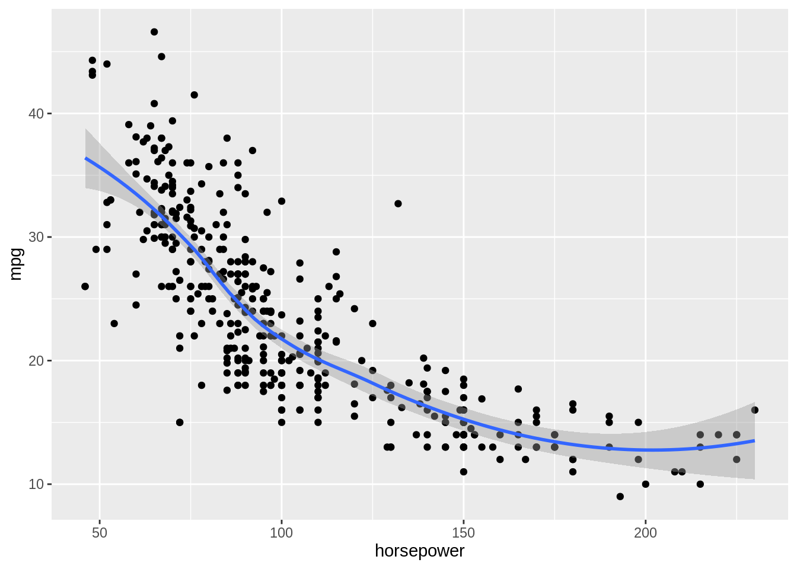
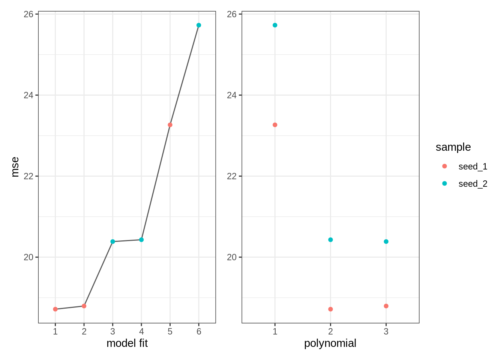
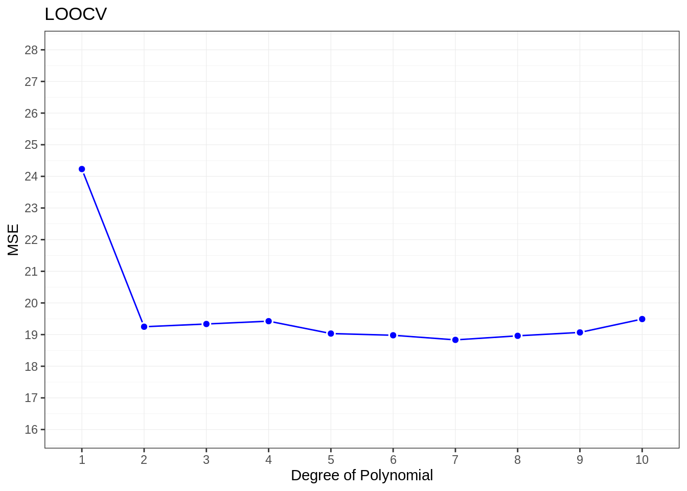

5.14 Lab: Cross-Validation and the Bootstrap
Resampling techniques
5.14.1 The Validation Set Approach
to estimate the test error rates
## [1] 392 9Check the trend of the data
## `geom_smooth()` using method = 'loess' and formula 'y ~ x'
The estimated test MSE for the linear regression fit is 23.27
lm.fit1 <- lm(mpg ~ horsepower, data = Auto, subset = train1)
# calculate MSE
mse <- cbind(Auto,pred=predict(lm.fit1, Auto))%>%
select(mpg,pred)%>%
slice(-train1)%>%
mutate(res=(mpg-pred)^2)%>%
summarize(mse=mean(res))poly() function to estimate the test error for the quadratic and cubic regressions
lm.fit2 <- lm(mpg ~ poly(horsepower,2),data=Auto,subset=train1)
mean((Auto$mpg - predict(lm.fit2, Auto))[-train1]^2)## [1] 18.71646lm.fit3 <- lm(mpg ~ poly(horsepower,3),data=Auto,subset=train1)
mean((Auto$mpg - predict(lm.fit3, Auto))[-train1]^2)## [1] 18.79401mse_df <- data.frame(sample= "seed_1",
poly=1:3,
mse=c(mean((Auto$mpg - predict(lm.fit1, Auto))[-train1]^2),
mean((Auto$mpg - predict(lm.fit2, Auto))[-train1]^2),
mean((Auto$mpg - predict(lm.fit3, Auto))[-train1]^2)))Trying with a different sample found that results are consistent and using a quadradic function is better than a simple liners function…
set.seed(2)
train2 <- sample(392,196)
lm.fit4 <- lm(mpg ~ horsepower, data = Auto, subset = train2)
lm.fit5 <- lm(mpg ~ poly(horsepower, 2), data = Auto,subset = train2)
lm.fit6 <- lm(mpg ~ poly(horsepower, 3), data = Auto,subset = train2)
mse_df_full <- mse_df %>%
rbind(data.frame(sample="seed_2",
poly=1:3,
mse=c(mean((Auto$mpg - predict(lm.fit4, Auto))[-train2]^2),
mean((Auto$mpg - predict(lm.fit5, Auto))[-train2]^2),
mean((Auto$mpg - predict(lm.fit6, Auto))[-train2]^2))
)) %>%
group_by(sample)%>%
arrange(mse)
mse_df_full## # A tibble: 6 × 3
## # Groups: sample [2]
## sample poly mse
## <chr> <int> <dbl>
## 1 seed_1 2 18.7
## 2 seed_1 3 18.8
## 3 seed_2 3 20.4
## 4 seed_2 2 20.4
## 5 seed_1 1 23.3
## 6 seed_2 1 25.7p1 <-ggplot(mse_df_full, aes(x=factor(1:6),y=mse,color=sample))+
geom_line(group=1,color="grey35")+
geom_point()+
labs(x="model fit")+
theme_bw()+
theme(legend.position = "none")
p2 <-ggplot(mse_df_full, aes(x=factor(poly),y=mse,color=sample))+
geom_point()+
labs(x="polynomial")+
theme_bw()+
theme(axis.title.y = element_blank())
p1+p2
5.14.2 Leave-One-Out Cross-Validation
LOOCV estimate for generalized linear models
- glm()
- cv.glm()
These linear regressions are the same
glm.fit <- glm(mpg ~ horsepower, data = Auto)
lm.fit <- lm(mpg ~ horsepower, data = Auto)
coef(glm.fit)## (Intercept) horsepower
## 39.9358610 -0.1578447## (Intercept) horsepower
## 39.9358610 -0.1578447In this section we use glm() as it can be used with `cv.glm() function to compare results.
In the cv.glm function, the two numbers in the delta vector contain the cross-validation results or the LOOCV statistic
LOOCV estimate for the MSE test error is the average of \(n\) tests error estimates:
\[CV_{n} = \frac{1}{n}{\sum_{i=1}^{n}}MSE_{i}\]
library(boot)
glm.fit_cv <- glm(mpg ~ horsepower, data = Auto)
cv.err <- cv.glm(Auto, glm.fit_cv)
cv.err$delta## [1] 24.23151 24.23114cv.error <- rep(0, 10)
# iteratively fits polynomial regressions for polynomials of order i = 1 to i = 10
for (i in 1:10) {
glm.fit <- glm(mpg ~ poly(horsepower, i), data = Auto)
cv.error[i] <- cv.glm(Auto, glm.fit)$delta[1]
}
cv.error## [1] 24.23151 19.24821 19.33498 19.42443 19.03321 18.97864 18.83305 18.96115
## [9] 19.06863 19.49093Sharp drop in the estimated test MSE between the linear and quadratic fits.
ggplot(data = data.frame(cv.error),
aes(x = factor(1:10), y =cv.error) ) +
geom_line(group=1,color="blue")+
geom_point(color="white",stroke=1,shape=21,size=2)+
geom_point(color="blue",size=1.5)+
labs(x="Degree of Polynomial",y="MSE",title="LOOCV")+
scale_y_continuous(limits = c(16,28),breaks = seq(16,28,1))+
theme_bw()+
theme(panel.grid = element_line(size=0.2))
5.14.3 k-Fold Cross-Validation
cv.glm() function is also used to implement k-fold CV.
computation time shorter
k <- 10
set.seed(17)
cv.error.10 <- rep(0,10)
for (i in 1:10) {
glm.fit <- glm(mpg ~ poly(horsepower, i), data = Auto)
cv.error.10[i] <- cv.glm(Auto, glm.fit, K=10)$delta[1]
}
cv.error.10## [1] 24.27207 19.26909 19.34805 19.29496 19.03198 18.89781 19.12061 19.14666
## [9] 18.87013 20.95520data.frame(id=1:10,
cv.error=cv.error,
cv.error.10=cv.error.10) %>%
pivot_longer(cols=c(cv.error,cv.error.10),names_to="cv",values_to="cv_values")%>%
ggplot(aes(x = id, y =cv_values,group=cv)) +
geom_line(aes(color=cv))+
geom_point(shape=".")+
labs(x="Degree of Polynomial",y="MSE",title="10-fold CV")+
scale_y_continuous(limits = c(16,28),breaks = seq(16,28,1))+
theme_bw()+
theme(panel.grid = element_line(size=0.2))
5.14.4 The Bootstrap
Bootstrap approach can be applied in almost all situations.
5.14.4.1 Estimating the Accuracy of a Statistic of Interest
- to assess the variability associated with the regression coefficients in a linear model fit, we need to quantify the uncertainty, and choose \(\alpha\) in order minimize the total risk, or variance, of the investment.
\(\alpha\) is the fraction we want to invest in \(X\) and \((1-\alpha)\) is the fraction we want to invest in \(Y\)
\[Var=\alpha X+(1-\alpha)Y)\] \[\alpha=\frac{\sigma^2_{Y}-\sigma_{XY}}{\sigma^2_{X}+\sigma^2_{Y}-2\sigma_{XY}}\]
alpha.fn <- function(data,index) {
X <- data$X[index]
Y <- data$Y[index]
(var(Y)-cov(X,Y))/(var(X)+var(Y)-2*cov(X,Y))
}First \(\alpha\) calculation
## [1] 0.5758321Bootstrap contruction
Select 100 random observations from the range 1 to 100, with replacement, recompute \(\hat{\alpha}\) based on new data.
## [1] 0.5385326Applying the boot() function with the alpha.fn and 1000 replications.
##
## ORDINARY NONPARAMETRIC BOOTSTRAP
##
##
## Call:
## boot(data = Portfolio, statistic = alpha.fn, R = 1000)
##
##
## Bootstrap Statistics :
## original bias std. error
## t1* 0.5758321 0.0007959475 0.089690745.14.4.2 Estimating the Accuracy of a Linear Regression Model
- to assess the variability of the coefficient estimates and predictions
In particular, to assess the variability of the estimates for \(\beta_{1}\) and \(\beta_{2}\)
boot.fn <- function(data, index)
coef(lm(mpg ~ horsepower, data = data, subset = index))
boot.fn(Auto, 1:392)## (Intercept) horsepower
## 39.9358610 -0.1578447If we try with different samples we obtain different results, with random observations.
Calculate the standard errors of 1,000 bootstrap estimates for the intercept and slope terms, applying the boot.fn to the bootstrap function boot():
##
## ORDINARY NONPARAMETRIC BOOTSTRAP
##
##
## Call:
## boot(data = Auto, statistic = boot.fn, R = 1000)
##
##
## Bootstrap Statistics :
## original bias std. error
## t1* 39.9358610 0.0815499334 0.846979326
## t2* -0.1578447 -0.0009816788 0.007234668## Estimate Std. Error t value Pr(>|t|)
## (Intercept) 39.9358610 0.717498656 55.65984 1.220362e-187
## horsepower -0.1578447 0.006445501 -24.48914 7.031989e-81What if we change the model adding I(horsepower^2) term in the model?
boot.fn <- function(data, index)
coef(lm(mpg ~ horsepower + I(horsepower^2),
data = data, subset = index))##
## ORDINARY NONPARAMETRIC BOOTSTRAP
##
##
## Call:
## boot(data = Auto, statistic = boot.fn, R = 1000)
##
##
## Bootstrap Statistics :
## original bias std. error
## t1* 56.900099702 3.511640e-02 2.0300222526
## t2* -0.466189630 -7.080834e-04 0.0324241984
## t3* 0.001230536 2.840324e-06 0.0001172164## Estimate Std. Error t value Pr(>|t|)
## (Intercept) 56.900099702 1.8004268063 31.60367 1.740911e-109
## horsepower -0.466189630 0.0311246171 -14.97816 2.289429e-40
## I(horsepower^2) 0.001230536 0.0001220759 10.08009 2.196340e-21